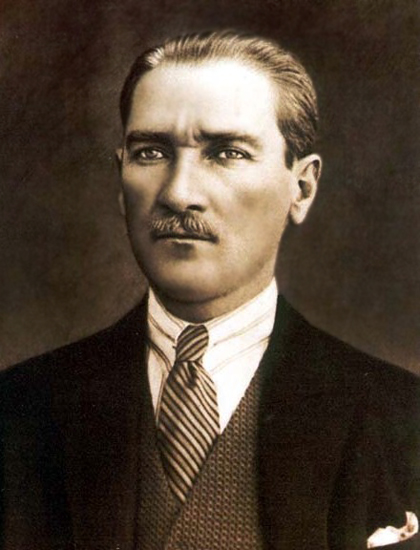
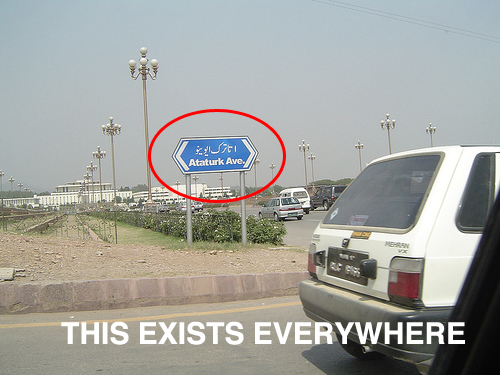
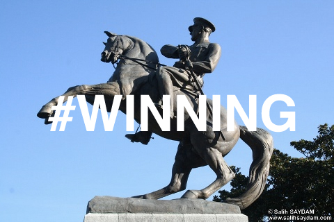

Destroyer of Worlds
This guy. Am I right? I mean just look at this guy. He took literally zero shit from anyone. He singlehandedly reformed an entire country from being the victim of imperialism to a beacon of secular self-determination. Here are nine reasons why this dude was an absolute baller.
Read on to discover
- the magic
- the mystery
- and the majesty
of this former Turkish President.
#1. His name is completely awesome.

Ataturk was born with just one name: Mustafa. Pretty sweet name. But when he was 12, his math teacher decided to tack on a last name: Kemal meaning perfection, because he was just absolutely crushing middle school.
Then, in 1935 when he decided everyone in the country needed last names (that's right, he was responsible for an entire country getting LAST NAMES) he chose the name Ataturk, making him the father of all Turks. Also, no one else in Turkey is allowed to have that name.
To top it all off, Ataturk is basically the only part of his name that anyone even remembers and or cares about at this point meaning he has returned to the one name status with which he was born.
1 name at birth + 2 during life = 1 name at death. Defies math.
#2. Every city in Turkey has a street named after him.
This is like, sort of basically kind of a law. You really can't have a town without naming atleast part of that town after Ataturk. On top of that he has an airport, bridge, dam and an Olympic stadium named after him. Why all the love? Besides the fact that he was a hero, his name is just incredibly fun to say. Ata-turk-turk-turk-turk.
#3. Dude was a 1st wave feminist.

In 1920, the United States ratified the 19th amendment after over 130 years of existence. Ataturk's government did it in 10. By 1930 women could vote in local elections and by 1934 women in Turkey had full suffrage. The next year several women were elected to the Turkish parliament.
On top of his vocal support for reforms in the workplace and the ballot box, Ataturk was just a great dad to his seven adopted daughters including Sabiha Gokcen who he adopted as a 12 year old and encouraged to become a pilot. She wound up becoming the world's first female fighter pilot.
#4. All he did was win
This statement is literally true. Ataturk never lost a battle. EVER. 100% win, 0% losses. #unbeatable, #suckitWinstonChurchill
#5. He conspired with Einstein to save Jews from Hitler.

That's right, Ataturk was a huge Einstein fan, and when a letter from Einstein reached his government in 1933, the same year Hitler became chancellor of Germany, requesting immigration rights for 40 Jewish doctors, dentists and scientists. When Ataturk found out about the letter he was all like "Hell Yes!" and "More Please!"
Opening immigration to Jews fleeing Germany helped Ataturk establish the educational reforms he was pushing for and according to Munir Ulgur, prompted Einstein to call Ataturk "the greatest leader of the century."